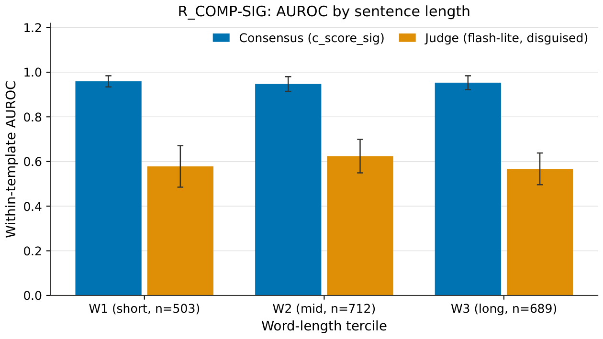
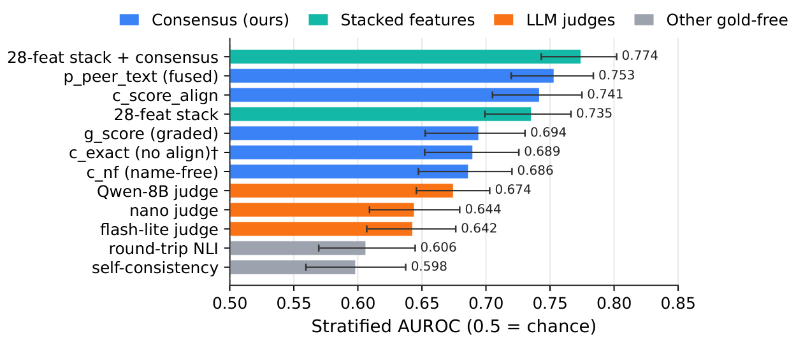
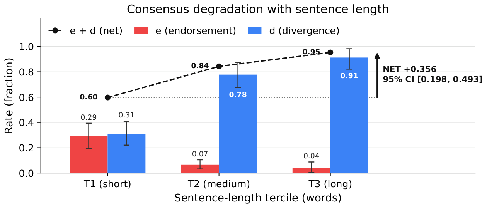
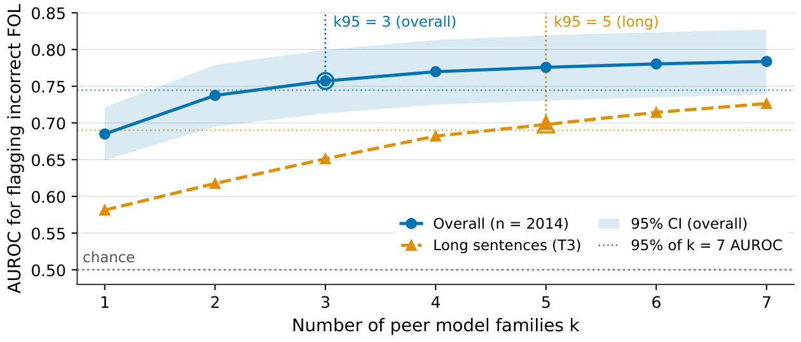

Abstract
Contributions
Pre-Registered SIG Evaluation
Within-template AUROC 0.954 vs 0.587 for a disguised judge (Δ = +0.367) on 221 sentences under shared signature, flat across word-length terciles. Zero error endorsement.
Free-Vocabulary Dev Results
Consensus outperforms judges by Δ = +0.099 [+0.049, +0.146] on stratified AUROC (n = 2,686). Aligner-free c_exact at 0.689 provides 78% of above-chance signal from structural agreement alone.
Untouched Free OOS
R_COMP FREE: Δ = +0.171 vs original-view judge under provisional labels. Consensus reaches 94% of frontier judge AUROC. Two-auditor Δ = +0.105.
Rename Tradeoff
76.5% false-alarm rate under nonce renames. No alignment variant eliminates this without sacrificing error recall. The name-free variant (c_nf) has zero rename flip but AUROC drops to 0.686.
Method
Consensus Scoring
Given a sentence s and candidate FOL translation c, collect peer translations {p1, …, pk} from k independent LLM families. Score the candidate as:
c_score(c, s) = 1 - (1/k) ∑ 1[equiv(c, pi)]
Under shared signature (c_score_sig), all translators use a supplied predicate vocabulary and equiv is a direct Z3 check. Under free vocabulary (c_score_align), each translator chooses its own names and equiv requires a predicate-name aligner before Z3.
Predicate Alignment (Free Vocabulary)
Independent translators choose different predicate names (e.g. Runs(x) vs IsRunner(x)). The aligner combines three cost components:
- Structural cost: polarity profile, argument-count match, nesting depth
- Text-anchor cost: overlap between predicate-name words and source-sentence tokens (Porter stemming, WordNet synonyms)
- Semantic signature: truth-value profiles over random finite interpretations
The k cheapest bijections are evaluated; the pair is declared equivalent if any bijection yields a Z3-verified equivalence.
Score Variants
- c_exact: no alignment; exact-match equivalence only. Immune to rename false alarms.
- c_nf (name-free): alignment by structural and semantic signatures only, ignoring text anchoring.
- p_peer_text: logistic fusion of consensus features with text-side features (bag-of-words coverage, role accounting, Z3 structural match).
Evaluation Framework
Shared-signature labels (R_COMP): Z3 equivalence to trusted-by-construction references (one weak, one strong reading per template). No human or LLM judgement in the labelling loop.
Free-vocabulary labels (set E): three-person expert panel. R_COMP FREE: provisional search-based classifications (non-confirmatory).
Primary metric: stratified AUROC (items paired only within the same source stratum). Confidence intervals via sentence-cluster percentile bootstrap (B = 2,000).
Shared-Signature Results (R_COMP-SIG)
(c_score_sig)
(flash-lite, disguised)
[+0.328, +0.404]
On 1,904 rows where both scores exist. Population: 429 ERROR / 1,595 CORRECT (21.2% error rate) from 221 sentences, 10 LLM slots across 9 vendor families. Error endorsement is zero (e = 0): no error item scores below the decision threshold. Among 429 error items, 75.3% receive the maximum score of 1.0.
| Metric | n | AUROC [95% CI] | Δ vs disg. judge |
|---|---|---|---|
| c_score_sig | 1,904 | 0.954 [0.939, 0.968] | +0.367 [+0.328, +0.404] |
| c_score_align | 1,904 | 0.954 [0.939, 0.968] | +0.367 [+0.328, +0.404] |
| judge (flash-lite, disg.) | 1,904 | 0.587 [0.551, 0.622] | — |
| judge (flash-lite, orig.) | 1,932 | 0.673 [0.637, 0.708] | |
| judge (frontier, orig.) | 60 | 0.932 [0.782, 1.000] | |
| judge (local, disg.) | 2,024 | 0.498 [0.459, 0.534] |
Flat with Sentence Length
Unlike the free-vocabulary setting, consensus under shared signature is flat across word-length terciles: W1 0.959, W2 0.947, W3 0.953.
| Tercile | n | ERR/COR | c_sig | judge (disg.) | Δ [CI] |
|---|---|---|---|---|---|
| W1 (shortest) | 503 | 125/449 | 0.959 | 0.578 | +0.382 [+0.278, +0.472] |
| W2 | 712 | 149/594 | 0.947 | 0.624 | +0.331 [+0.253, +0.421] |
| W3 (longest) | 689 | 155/552 | 0.953 | 0.567 | +0.388 [+0.301, +0.471] |

Frontier judge comparison: On a 60-row subsample, consensus achieves 0.956 [0.889, 1.000] vs 0.932 [0.855, 0.990] for the frontier judge (Gemini 3.1 Pro).
Scope: R_COMP-SIG uses templated sentences with a supplied predicate vocabulary. The shared signature eliminates the alignment problem entirely. These results do not extend to free-vocabulary settings.
Free-Vocabulary Development Results (Set E)

| Metric | Strat AUROC [95% CI] | $/item |
|---|---|---|
| c_score_align | 0.741 [0.705, 0.775] | 9.1e-5 |
| p_peer_text (fused) | 0.753 [0.720, 0.784] | 9.1e-5 |
| c_exact (no alignment) | 0.689 [0.652, 0.726] | — |
| c_nf (name-free) | 0.686 [0.647, 0.720] | — |
| flash-lite judge (disg.) | 0.642 [0.607, 0.676] | 5.1e-5 |
| flash-lite judge (orig.) | 0.623 [0.593, 0.651] | 5.1e-5 |
| nano judge (disg.) | 0.644 [0.609, 0.680] | 2.0e-5 |
| local judge Qwen-8B (disg.) | 0.674 [0.646, 0.703] | — |
| round-trip NLI (min) | 0.606 [0.569, 0.645] | 2.8e-5 |
| self-consistency (5-sample) | 0.598 [0.559, 0.637] | 6.7e-5 |
| 28-feature stack | 0.735 [0.699, 0.766] | — |
| 28-feature stack + c_score_align | 0.774 [0.743, 0.802] | — |
The drop from 0.952 (shared signature, full 2,024-row pool) to 0.801 (free vocabulary on the same R_COMP sentences) reflects the cost of predicate-name alignment. Aligner-free c_exact at 0.689 provides 78% of the above-chance signal from structural agreement alone; the aligner adds the remaining 22%.
Adding c_score_align to the 28-feature baseline stack increases stratified AUROC by +0.039 [+0.021, +0.057]; permutation null test p95 = 0.009.
Frontier judge comparison: c_score_align achieves 95.7% of the frontier judge's AUROC (ratio 0.957 [0.887, 1.034]) on a 284-row subsample.
System-level ranking: Kendall τb = 0.692 [+0.513, +0.795] between system mean score and error rate across 13 configurations.
Free-Vocabulary Out-of-Sample (R_COMP FREE)
The same 221 R_COMP sentences translated under free vocabulary. Confirmatory labelling required a gloss gate that failed twice (balanced accuracy 0.776 and 0.561, below the 0.90 threshold), producing zero confirmed CORRECT rows. Results use provisional non-confirmatory labels.
| View | n (ERR/MAPPED) | c_align | judge |
|---|---|---|---|
| Disguised | 1,706 (602/1,104) | 0.801 [0.770, 0.834] | 0.584 [0.550, 0.618] |
| Original | 1,709 (605/1,104) | 0.804 [0.774, 0.836] | 0.633 [0.601, 0.666] |
Disguised-judge Δ = +0.217 [+0.175, +0.260]. Original-view Δ = +0.171 [+0.135, +0.206]. On a 146-row two-auditor subset: Δ = +0.105 [+0.011, +0.215]. On a 150-row frontier-judge subsample: consensus reaches 0.94 of the frontier judge's AUROC.
Mechanism
The consensus signal decomposes into endorsement e (fraction of ERROR items endorsed by peers, i.e. false negatives) and divergence d (fraction of CORRECT items that diverge from peers, i.e. false positives). AUROC at a binary threshold equals 1 − (e + d)/2.
Shared vocabulary: e = 0.0, d = 0.260. Zero error endorsement; 26% false-alarm rate from valid alternative formalizations. Flat across sentence lengths.
Free vocabulary: Net degradation Δ(e + d) = +0.356 [+0.198, +0.493] from short to long sentences, driven almost entirely by divergence (Δd = +0.608, Δe = −0.252). As formulas grow longer, the predicate-name aligner increasingly makes mistakes.

Family Sufficiency
Three peer families suffice for 97% of full-pool AUROC (k95 = 3), but the long-sentence tercile requires k95 = 5.
| k | AUROC (overall) | AUROC (long, T3) |
|---|---|---|
| 1 | 0.685 | 0.581 |
| 3 | 0.757 | 0.651 |
| 5 | 0.776 | 0.698 |
| 7 | 0.784 | 0.726 |

The Rename Tradeoff
The predicate aligner that enables free-vocabulary comparison introduces a fundamental false-alarm vulnerability. When correct formulas are copied with meaning-preserving renames, the consensus score should not change. In practice:
| Metric | NONCE FA | NONCE flip | SYN FA | SYN flip |
|---|---|---|---|---|
| c_align | 0.765 | 0.605 | 0.565 | 0.313 |
| c_nf (name-free) | 0.132 | 0.000 | 0.201 | 0.000 |
| p_peer_text | 1.000 | 0.821 | 0.216 | 0.080 |
| judge (disg.) | 0.229 | 0.134 | 0.085 | 0.058 |
The name-free variant c_nf eliminates rename sensitivity (flip = 0) but at the cost of within-base AUROC 0.499 (chance level) and lower overall discrimination (0.686 vs 0.741). This tradeoff explains the gap between shared-signature and free-vocabulary performance.
Per-Type Sensitivity
On the PERTURB suite (4,234 typed mutants + 868 controls), consensus recall at the primary threshold is flat across error operators: NEG 0.761, SWAP 0.758, DROP 0.721, ADD 0.763, MEANING_RENAME 0.762. Error typing under free vocabulary achieves only 0.123 [0.081, 0.169] accuracy, below both the judge (0.326) and peer-medoid baseline (0.328).
Confirmation Status
Independent confirmation on held-out data remains incomplete. A fresh dataset (E2-A, 550 new sentences) was constructed but the budget was exhausted before enough items could be labelled.
- DT stratum (short, ProverQA): consensus AUROC 0.916, tying Qwen-8B judge (Δ = +0.003 [−0.042, +0.052]).
- L25 stratum: c_score_align falls to 0.443 on only 42 items (35 ERROR / 7 CORRECT), below chance, but extreme variance with only 7 CORRECT items from 3 sentences.
Every pre-registered criterion on the target strata returned NOT_TESTABLE or unfavourable.
Dead Ends
Investigated and abandoned: fused structural-feature filter (false-alarm gate failure); name-free consensus c_nf (rename-invariant but blind to meaning-rename errors); decomposed solver-based semantic reader (balanced accuracy 0.476); LLM adjudication of disputed items (balanced accuracy 0.662); candidate-signature consensus (error endorsement rose to 0.459 because peers reproduced the candidate's errors).
Limitations
- Shared-signature scope. The 0.954 AUROC uses templated sentences with a supplied predicate vocabulary. The templates and supplied signature limit scope to controlled evaluation settings.
- Development data overlap. R_COMP-SIG later served as development data for aligner tuning. Pre-registration ensures the SIG result is uncontaminated, but the dev-set numbers from E are not independent.
- Rename vulnerability. Under free vocabulary, a 76.5% false-alarm rate on nonce renames means the metric systematically penalises non-standard predicate names, even if semantically correct.
- Length degradation (free vocabulary). Net degradation +0.356 from short to long sentences, driven by correct-translation divergence. Weakest on the longest, most complex sentences.
- Provisional labels. R_COMP FREE uses non-confirmatory labels; the two-auditor subset Δ = +0.105 has a CI that barely excludes zero.
- Label dependence. Development results on E depend on a three-person panel whose agreement is imperfect. The metric's advantage could partly reflect panel biases.
- Cost. Consensus requires k peer translations per sentence. In this experiment (k = 9), amortised cost is about 19× a single cheap judge call.
- Domain. All results are English→FOL from MALLS, ProverQA, and R_COMP. Generalisation to other formalisms, languages, or distributions is untested.
Code Artifacts
- Consensus scoring
- Development set E
- Baselines
- Code: Held-out logic translation test set, panel-checked
- p_peer_text (fused)
- Code: Long logic sentences and FOL error suite
- Code: Re-checking earlier logic-metric results across label sets
- Dev results evaluation
- R_COMP dataset
- Rename tradeoff
- Mechanism decomposition
- Code: What is new about peer agreement for logic
- E2-A held-out data
- Dead ends
- Code: Do symbol hints help model agreement checks?
- Code: Name-free labels for free-vocabulary logic translations
- Code: Can shared vocabulary fix consensus blind spots?
- Code: Consensus vs LLM judges on fresh logic data
- Code: Second fresh sample of long logic sentences
- R_COMP FREE
- Code: Screening fixes for model-agreement false alarms
- Code: Corrected record: every paper number checked